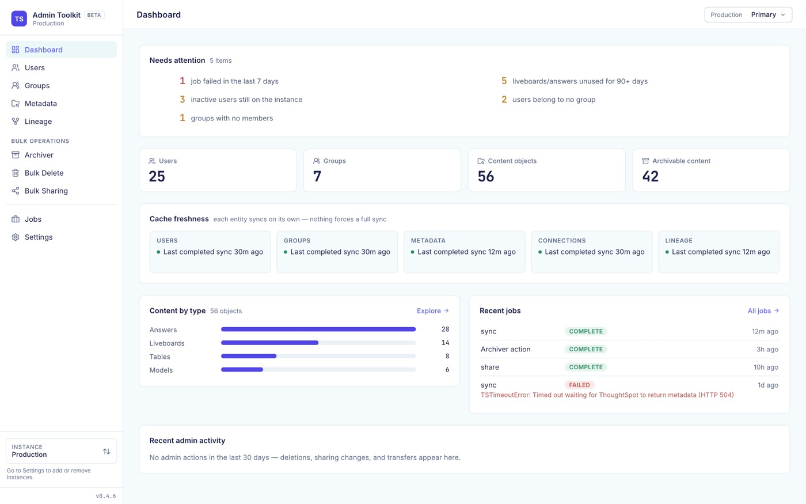
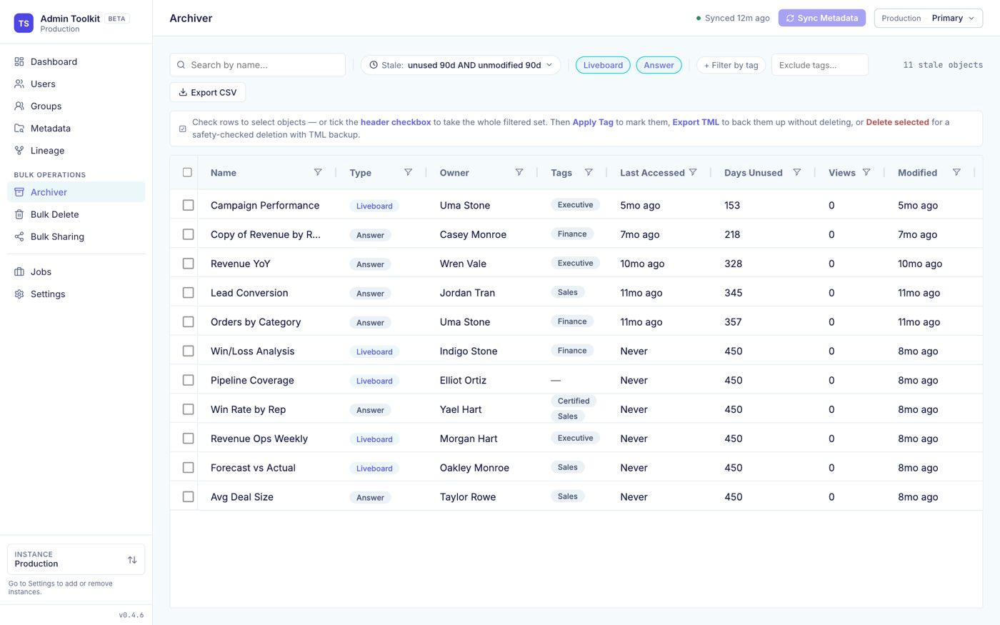
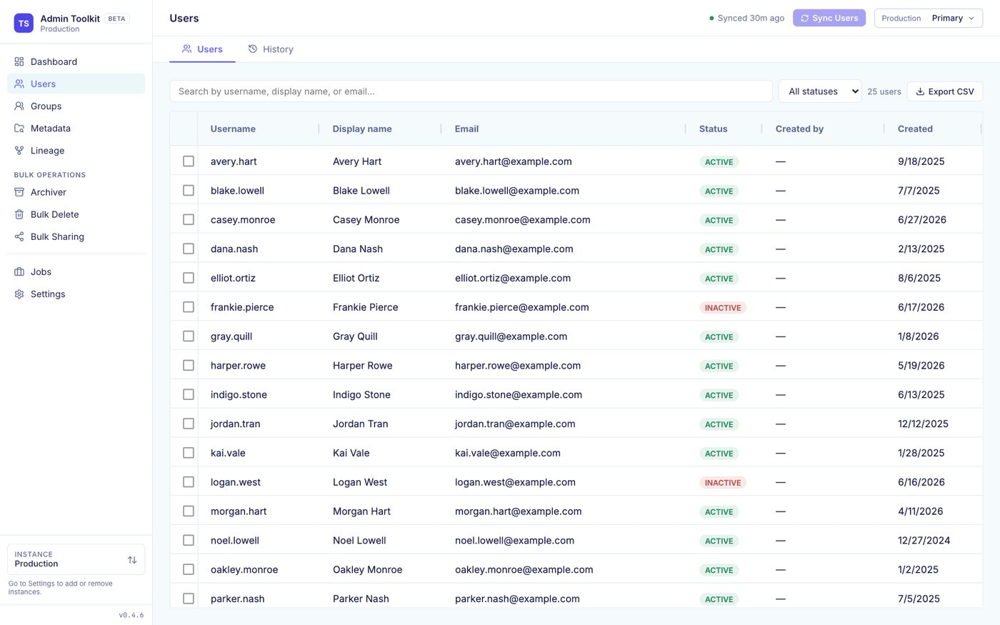
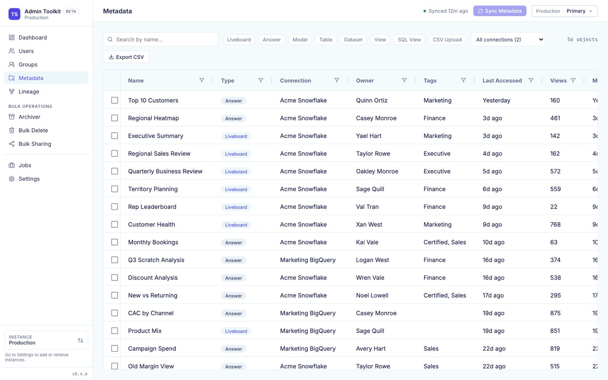
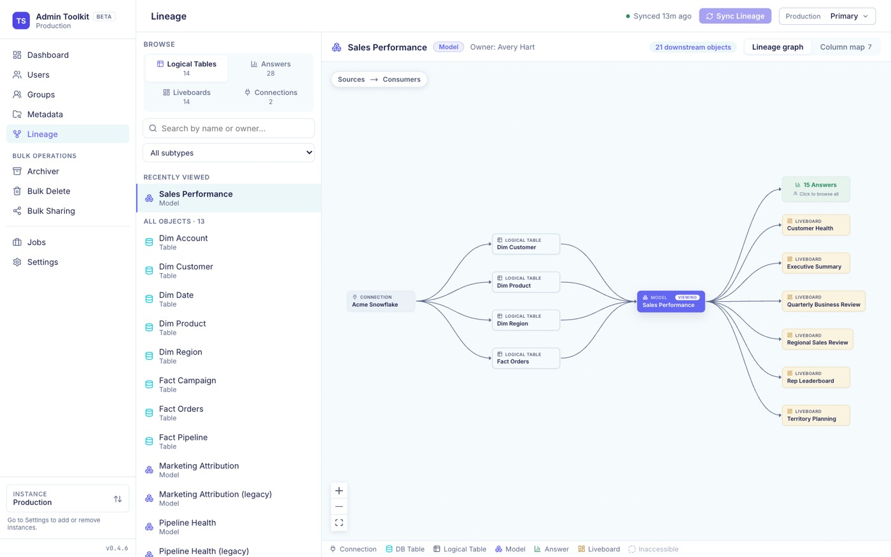

A local web app for ThoughtSpot admins
Clean up ThoughtSpot
without writing a script.
Find stale content, clean up leavers, and see what depends on what. The toolkit caches your instance's users, groups and content so you can browse instantly, then runs bulk changes with a dry-run preview and a TML backup first.
For ThoughtSpot Cloud or Software. No Python or Node.js needed.

Get started in three steps.
You need a ThoughtSpot login with the ADMINISTRATION privilege. Everything after the install happens in the browser.
Install
curl -LsSf https://raw.githubusercontent.com/BibekTS/thoughtspot-admin-toolkit/main/install.sh | sh powershell -ExecutionPolicy Bypass -c "irm https://raw.githubusercontent.com/BibekTS/thoughtspot-admin-toolkit/main/install.ps1 | iex" Installs into its own isolated environment. Re-run it to upgrade. Behind a corporate proxy? See the certificate fix.
Open the app
ts-admin-toolkit serveOpens http://localhost:8080 in your browser. Keep the terminal open while you use it.
Connect your instance
Enter your ThoughtSpot URL, pick a sign-in method and click Test connection.
Credentials go to your OS keychain. Then sync each section on its own; nothing forces a full sync.
What you can do.
Browse from a local cache, then act in bulk. Every sync and bulk operation runs as a tracked background job with live progress.




Screenshots use sample data.
How it works.
The toolkit talks to the public ThoughtSpot REST API v2 and mirrors users, groups, metadata and lineage into a local SQLite database. Browsing reads the cache. Writes go straight to ThoughtSpot.
~/.ts-admin/tml-exports/ and can be restored.Install it in one command.
Then run ts-admin-toolkit serve and connect your instance in the browser. Try it on a non-production instance first.